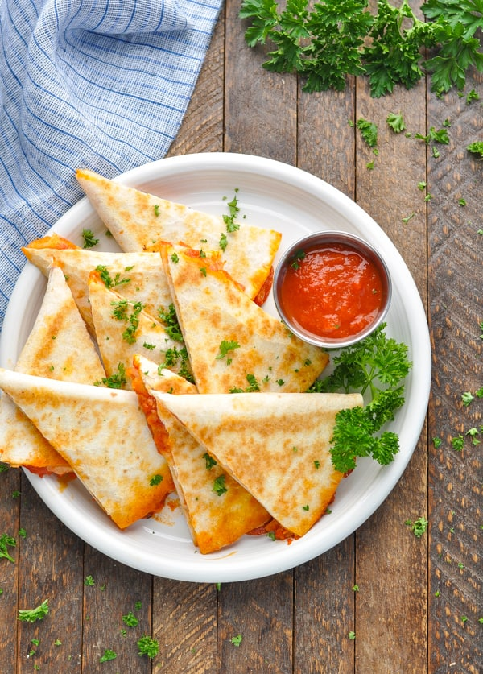

Ingredients
- 1 flour tortilla
- 2 tablespoons marinara sauce or pizza sauce
- ¼ cup shredded mozzarella cheese
- Optional additional ingredients: grated Parmesan cheese, sliced pepperoni, mushrooms, onions, bell peppers, sausage, or any other pizza toppings of your choice
- For dipping: warm marinara sauce
Instructions
- Preheat a flat griddle or a large skillet over medium heat.
- Spread marinara sauce on half of the tortilla. Sprinkle with shredded mozzarella cheese, and any other toppings of your choice. Add another layer of mozzarella over toppings.
- Fold tortilla over.
- Spray griddle with cooking spray and cook quesadilla for 2-3 minutes per side, or until browned. Remove to a cutting board and allow the quesadilla to cool for a few minutes. Cut into triangles and serve.
